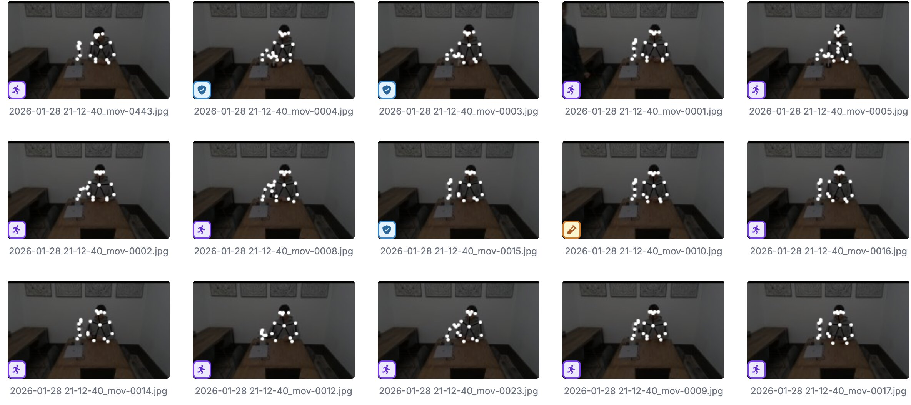
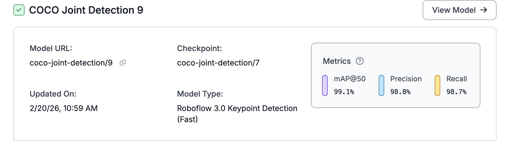
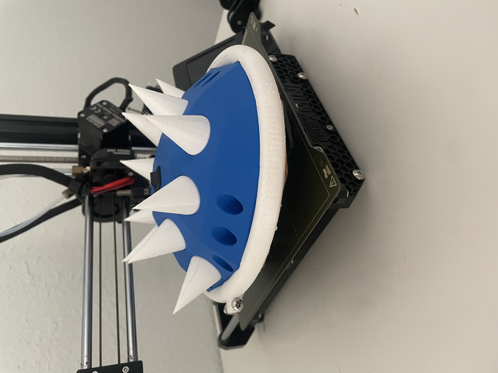
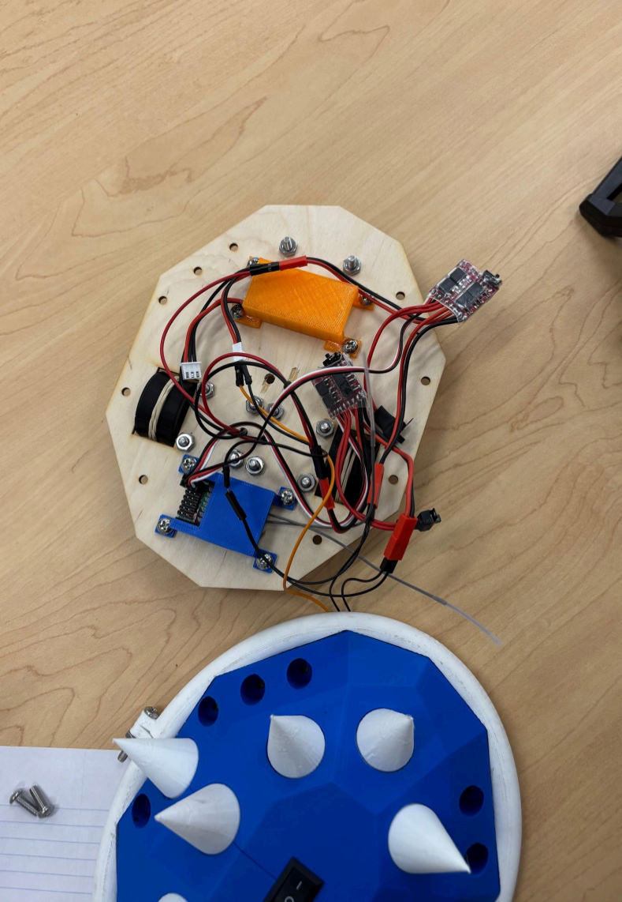
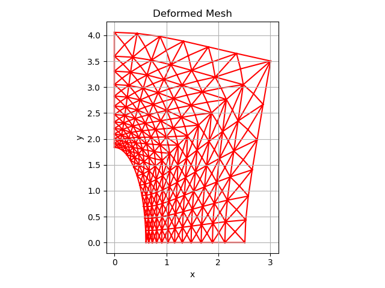
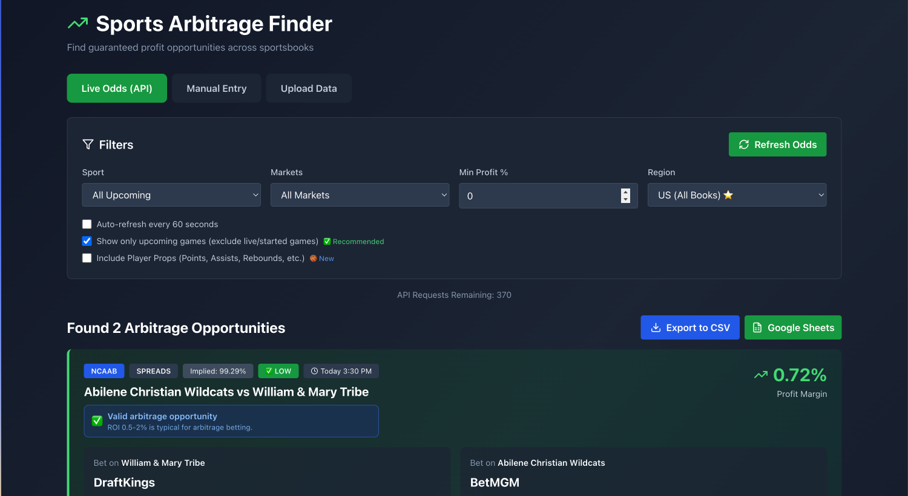
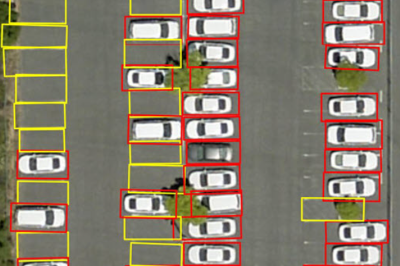
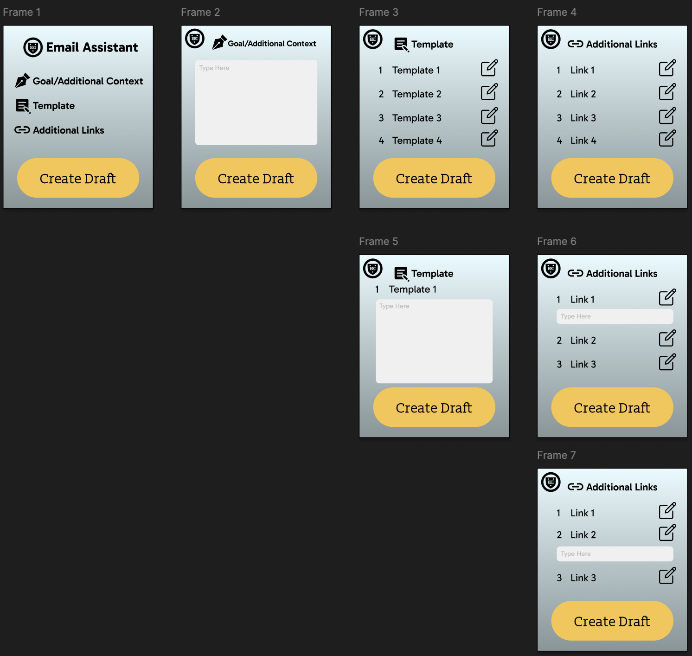

ENGINEERING
PRECISION.
Jesse Oh
Computational mechanics and data-driven systems engineered for clinical precision. Based in LA / Austin.
Human-Cobot Proximity Pipeline
CogniEdge AI
Developed a real-time human-cobot proximity and awareness pipeline on an NVIDIA Jetson Orin for CogniEdge's CEDR framework — a neuroadaptive human-robot collaboration system targeting EV battery assembly lines. Work included deploying and validating a YOLO person-detection model on CUDA, building a blink-detection module with RealSense camera integration (resolving a zombie process blocking the device), and training a custom YOLOv8n letter-detection model on 31 annotated Roboflow images for 100 epochs (~18 min on Jetson GPU), achieving 90% precision and exporting as a TensorRT engine. Also contributed to a React/Node.js telemetry dashboard visualizing live pipeline outputs.


Gesture-Controlled Audio Plugin Interface
Built a React front-end for controlling audio parameters via hand-tracking. Includes real-time graphs, parameter sliders, and model-driven visual feedback.
Battle Bot
ME 302/210 — UT Austin
Designed and fabricated a 3-wheeled combat robot for UT Austin's Engineering Design & Graphics course. Built on a laser-cut plywood baseplate with two direct-drive motors, differential steering, and a 3D-printed shell with passive weapon attachments. Components include a Flysky RC controller, dual ESCs, and a 7.4V LiPo battery pack. Fit within a 10″×10″×10″ envelope.



Finite Element Method (FEM) Solver
Sports Betting AI Consensus Dashboard
Aggregates sportsbook data, generates consensus predictions using OpenAI / Gemini / Perplexity, and displays real-time line movements.

Parking Spot Image Classification
Trained an SVC pipeline to classify parking spots as occupied or empty, with grid search hyperparameter tuning and accuracy reporting.
VIEW REPOSITORY east
Email Automation Chrome Extension
Custom extension for a tutoring center that automates outbound email generation, scheduling, and syncing with Google Sheets. Permissions turned over at end of contract — Figma mock-ups available.

Jesse Oh
Engineer focused on computational mechanics, data-driven systems, and robotic-assisted surgery — bridging high-fidelity numerical analysis with predictive modeling to push the boundaries of patient-specific diagnostics. Currently based between Los Angeles and Austin.
The same analytical brain that reverse-engineers systems also reverse-engineers sound. As a self-taught producer working in Ableton Live, Pro Tools, and iZotope RX 11 — with a grounding in signal flow, gain staging, and audio repair — Jesse applies engineering precision to electronic music spanning House, Techno, and Festival EDM, as well as more textural, organic work. He also plays nylon string guitar by ear.